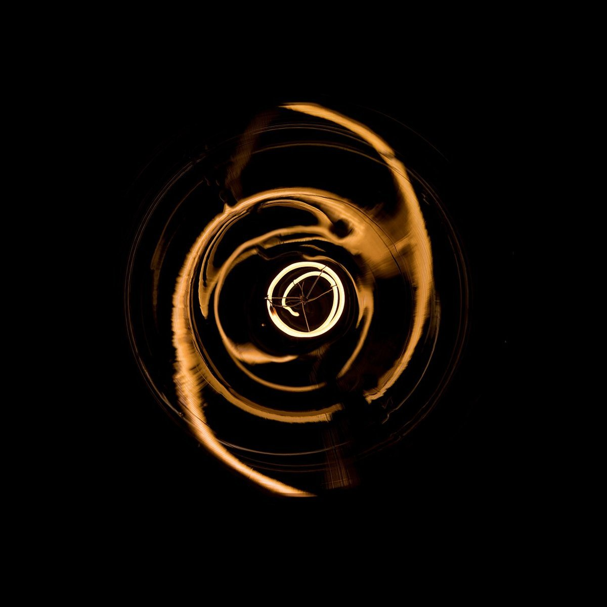

カフェ(コーヒー) / 兵庫県養父市八鹿町
hatchcoffee
兵庫県養父市八鹿町にあるカフェ「hatchcoffee」のご案内ページです。営業時間やメニューなど、詳しいことは準備中。まずはInstagramをのぞいてみてください。

制作側の連想
「hatch」からペン画の斜線を思い浮かべた
屋号の由来は分かりません。制作側は「hatch」という単語から、ペン画で線を並べて濃淡をつける「ハッチング」を連想しました。そこでこのサイトは、線一本から塗りつぶしまで、斜線の密度が段階的に上がっていく作りにしています(上のメニューの小さな斜線の見本が、ページごとの段階です)。制作側の連想で、お店の理念・由来とは無関係です。
ハッチングの四段階
線の数が増えるほど、濃くなる。
写真は線や濃淡のイメージで選んだ、国外・撮影地不明のフリー素材です。お店の写真ではありません。
Ⅰ 輪郭

撮影地不明のイメージ 線を一本だけ引く。まず形のふちをとる。
Ⅱ 平行線

国外のイメージ(スウェーデン) 同じ向きに線をならべて、面をつくる。
Ⅲ 交差線

国外のイメージ(スウェーデン) 向きを変えて重ねると、色が深くなる。
Ⅳ ベタ

国外のイメージ(ノルウェー) 線が詰まりきると、ひと色の塗りになる。
ご案内
お店のこと(確認できたものだけ)
| 所在地 | 〒667-0021 兵庫県養父市八鹿町八鹿712 |
|---|---|
| 電話 | 079-666-8700 |
| 営業時間 | 準備中 |
| 定休日 | 準備中 |
| ご予約 | 準備中 |
| 駐車場 | 準備中 |
| SNS | Instagram @hatchcoffee.8 |